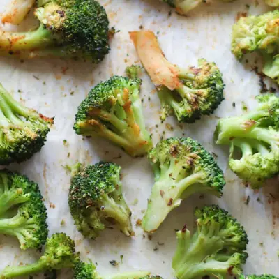

How to Cook Frozen Broccoli

Ingredients
- 16 oz. bag frozen broccoli
- 2 tablespoons olive or avocado oil
- 1-2 teaspoons seasoning(s) of choice
- (optional) lemon juice, parmesan cheese
Steps
- Preheat oven to 425°F. Line a large baking sheet with parchment paper for easy clean up.
- Add the frozen broccoli to the baking sheet in a single layer, taking care not to overcrowd the pan. Place in the oven and roast for 10 minutes. This extra step assists in removing excess water.
- Remove from the oven and add oil and seasonings of choice. Toss with tongs until broccoli is well coated. Place back in the oven and roast for another 10 minutes. If you want it to be extra crispy and brown, broil on high for 5 minutes or so.
- Add broccoli to a large skillet. Add 1/4 cup of water for every 1/2 pound (8 ounces) and cook covered over medium heat until the ice from the broccoli melts, about 2 minutes.
- Transfer broccoli to a colander and shake off excess moisture. Wipe down the pan. Cut any large florets so they are all uniform in size.
- Add oil to the same skillet and heat over medium-high heat. Add back in the drained broccoli and saute for 5-7 minutes, taking care not to toss too much. Add seasoning(s) of choice and a squeeze of fresh lemon always brightens it up! It makes all the difference in the world!
- Place water in a pot, add steamer basket, and bring to a boil. Add broccoli, cover, reduce heat to medium, and cook for 3-4 minutes, until tender. Transfer to a bowl and toss with seasoning(s) and lemon juice.
- Place 1/2 pound of broccoli and 2 tablespoons water into a microwave safe dish. Cover with a lid or microwave safe dish. Microwave on high for 2 minutes. Stir and cook for 2-3 additional minutes. It will take about 5 minutes. Strain and season.
Recipe by Min Kwon · Kidfriendly Meals, from MJ and Hungryman. Saved here for personal use; the original has the full notes, tips and photos. Open original